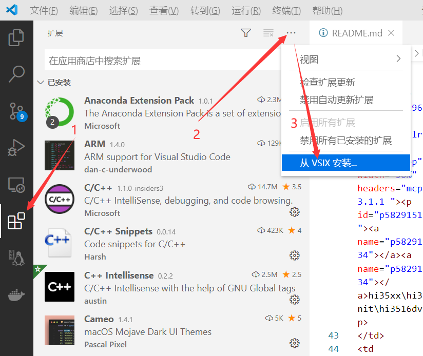
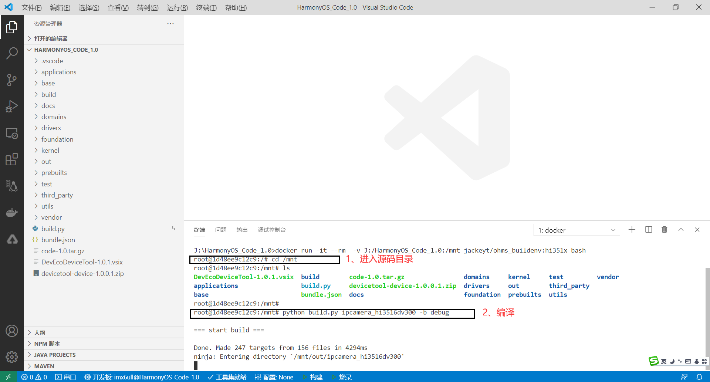
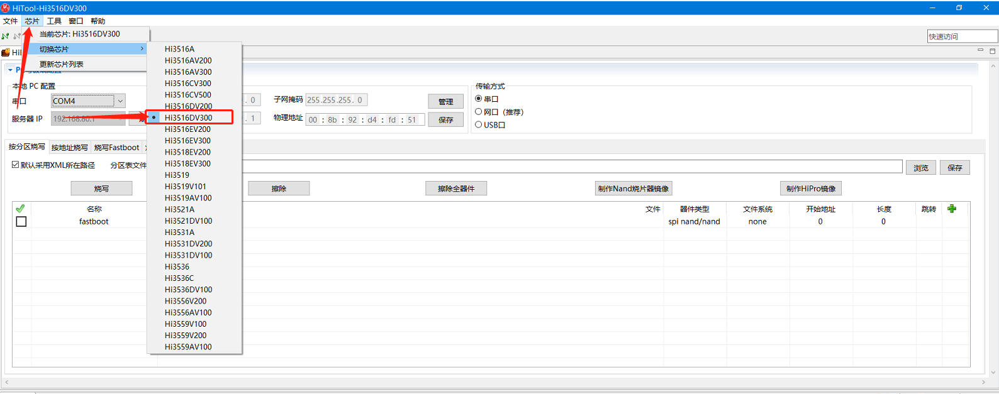
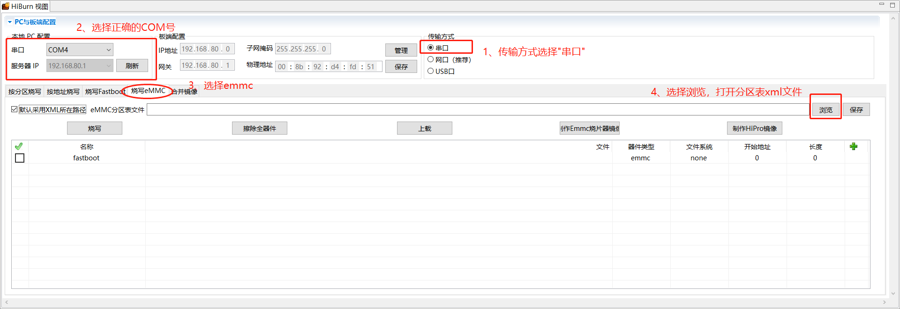
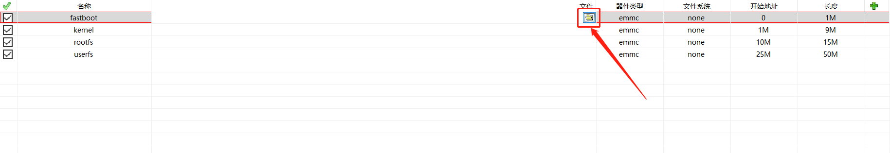

HarmonyOS开发板使用连载—1.纯WIN10下开发环境搭建
0、引言
本文将实现 win10版本docker+HarmonyOS代码编译环境+VSCode+ HUAWEI DevEco Device Tool 在Windows10下面实现的集代码开发、编译、烧写、调试等一站化的IDE工具
-
主机：Windows10
-
VS Code版本
Version: 1.50.1 (user setup)
Commit: d2e414d9e4239a252d1ab117bd7067f125afd80a
Date: 2020-10-13T15:06:15.712Z
Electron: 9.2.1
Chrome: 83.0.4103.122
Node.js: 12.14.1
V8: 8.3.110.13-electron.0
OS: Windows_NT x64 10.0.19041
- DevEco Device Tool 版本
devicetool-device-1.0.0.1
- docker 版本(docker Desktop for win10)
Docker version 19.03.13, build 4484c46d9d
1、为什么选择这种搭配
原因有三：
- 免搭建Linux环境下的各种包or各种依赖...，小白上手，有手就行！
- 脱离Linux环境下各种文件网络共享，直接操作本地源码、文件，效率高！
- 集代码开发、编译、烧写、调试于一体，告别各种不友好，摇身一变51单片机
2、安装环境
2.1、安装WIN10版Docker
docker Desktop 下载地址：https://desktop.docker.com/win/stable/Docker%20Desktop%20Installer.exe

安装完成后，点击重启即可：

2.2、配置docker加速
在桌面右下角状态栏中右键 docker 图标，修改在 Docker Daemon 标签页中的 json ，把下面的地址:
http://f1361db2.m.daocloud.io
加到" registry-mirrors"的数组里,如下两图所示：

最后点击“Apply&Restart”
2.3、测试docker
运行WIN10的CMD 或者 powershell 窗口，输入命令：
docker run -d -p 80:80 docker/getting-started
即可成功拉取docker镜像：

拉取成功后，输入docker images命令即可看到：多一个docker/getting-started的镜像，如下图所示：
2.4、下载鸿蒙OS集成开发docker环境
运行WIN10的CMD 或者 powershell 窗口，输入命令：
docker pull jackeyt/ohms_buildenv:hi351x
即可成功拉取docker镜像：
2.5、下载鸿蒙OS集成开发docker环境
运行WIN10的CMD 或者 powershell 窗口，输入命令：
docker pull jackeyt/ohms_buildenv:hi351x
即可成功拉取docker镜像：
2.6、安装VSCode及插件
2.6.1 安装VSCode
- 选择Windows版本即可，下载地址：https://code.visualstudio.com
2.6.2 安装VSCode插件
点击VSCode侧边栏->插件->输入插件名称->安装
- docker
- Remote Development
- C/C++
- C/C++ Snippets
- python
- GN
安装VSCode插件：HUAWEI DevEco Device Tool 下载可能需要华为帐号
安装过程如下图所示：

3、编译HarmonyOS
3.1、下载源码
下载源码的方式，官方介绍了四种，这里以最常用的为例：
点击下载链接
下载得到一个code-1.0.tar.gz源码压缩包，并解压到一个目录，这里以'J:\HarmonyOS_Code_1.0'为例。
3.2、使用VSCode IDE打开源码
按上文描述，得到一个集成各种开发环境的VSCode之后，使用VSCode打开源码所在目录文件夹，这里以'J:\HarmonyOS_Code_1.0'为例：

3.3、使用VSCode IDE运行HarmonyOS编译环境
在IDE下，使用快捷键'Ctrl+`'快速打开终端，输入如下命令，快速启动前文下好的Docker环境：
docker run -it --rm -v J:/HarmonyOS_Code_1.0:/mnt jackeyt/ohms_buildenv:hi351x bash
-
说明:-v 为docker共享文件参数，使用该参数，将
J:/HarmonyOS_Code_1.0的源码共享到Docker中的/mnt文件夹中了 -
效果如下图所示：
有了编译环境，现在我们离编译成功就差两个命令了：
- 切换到源码目录：
cd /mnt - 执行编译:
python build.py ipcamera_hi3516dv300 -b debug

- 编译成功后，得到如下所示结果：

4、烧录HarmonyOS
开发鸿蒙有两种方式可以用于烧写系统、uboot、文件系统，分别是使用海思提供的Vscode插件HUAWEI DevEco Device Tool和使用Hitool进行烧录，两者均支持串口、网口、USB等三种方式进行烧录。
4.1、使用HUAWEI DevEco Device Tool进行烧录
华为提供的工具：HUAWEI DevEco Device Tool 提供了烧录的全环境，可以参考官方的使用链接：
https://device.harmonyos.com/cn/docs/ide/user-guides/service_introduction-0000001050166905
根据文档指示完成VSCode插件安装，及JDK安装： DevEco Device Tool以插件方式提供，基于Visual Studio Code进行扩展，安装分为如下：
- 安装Node.js
- 安装hpm
4.2、使用Hitool进行烧录
本文已经串口及网口烧录进行说明
- Hitool下载地址如下：
链接：https://pan.baidu.com/s/1Hq_rsATDLNMEQuH_rUNP_Q
提取码：rsej
4.2.1 使用Hitool进行烧录之串口
打开HiTool.exe进入主界面，选择芯片，这里以hi3516dv300为例，选择HiBurn工具：

- 按下图操作，打开分区xml文件

- xml文件可按本文提供的模板进行使用，复制以下代码，并保存为.xml文件
<?xml version="1.0" encoding="GB2312" ?>
<Partition_Info>
<Part Sel="1" PartitionName="fastboot" FlashType="emmc" FileSystem="none" Start="0" Length="1M"
SelectFile=""/>
<Part Sel="1" PartitionName="kernel" FlashType="emmc" FileSystem="none" Start="1M" Length="9M" SelectFile=""/>
<Part Sel="1" PartitionName="rootfs" FlashType="emmc" FileSystem="none" Start="10M" Length="15M" SelectFile=""/>
<Part Sel="1" PartitionName="userfs" FlashType="emmc" FileSystem="none" Start="25M" Length="50M" SelectFile=""/>
</Partition_Info>
如本文所例，保存为'Hi3516DV300_burn.xml'后，浏览打开：
可以看见，分区表已经导入，具体分区是参考官方文档提供的分区表：

- 加载需下载文件
按上面提供的分区表，我们需要下载的文件有四个，分别是uboot.bin、OHOS_Image.bin、rootfs.img、userfs.img,按下图操作，一个个文件导入：

- 最终，导入的效果如下图所示：

- 开始下载
点击界面上的"烧写"按键，进入烧录流程，并按提示进行重新上电：

- 烧录过程：

等待一个多小时才能烧录完成，因为串口的速度比较慢。
4.2.2 使用Hitool进行烧录之网口
- 配置Uboot IP地址：
setenv serverip 192.168.1.111
setenv ethaddr 00:11:22:33:44:55
setenv gatewayip 192.168.1.1
setenv netmask 255.255.255.0
setenv ipaddr 192.168.1.188
saveenv
配置成功之后，可以使用ping 192.168.1.111测试一下
- 使用Hitool进行烧录：
将烧录方式，IP地址等按照如下图所示，完成配置：

- 烧写过程如上文所示进行即可：

4.2.3 使用Hitool烧录完成，配置uboot
setenv bootcmd "mmc read 0x0 0x80000000 0x800 0x4800; go 0x80000000";
setenv bootargs "console=ttyAMA0,115200n8 root=emmc fstype=vfat rootaddr=10M rootsize=15M rw";
saveenv
reset
4、调试HarmonyOS
参考官方教程：https://device.harmonyos.com/cn/docs/ide/user-guides/arm_debug-0000001052809856